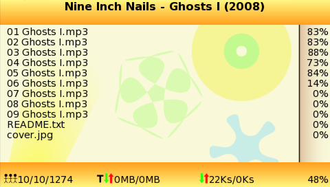

ey All, Neoflash time again!
This time I’m entering a torrent client for PSP, because I thought we need one.
Turns out we don’t really need one, but it is nice to have it anyway 🙂

Download CTorrentPSP Executable
Download CTorrentPSP Source
Read the README.PSP for more details and the list of bugs 😉
Delete the resources/splash.png to get rid of the splash screen.
Let me know what you download with it! lol! 🙂
Developed under M33 3.90-2, using PSPLINK (of course), run under 3.XX Kernel. 1.5 not supported (Use the code, you can make it work on 1.5 if you want it to)
Heat should be no problem unless your PSP explodes… 😉 (AKA it gets too hot)
I assume you are running it while plugged into the charger?
If so, try take the battery out while you download.
Danzel > changed path work (GAME to COMMON)! no need to go on some other site to use torrent ! I can download my .torrent directly !
suggest 1 : try to add a internet browser laucher in Ctorrent to get torrent directly
suggest 2 : store file downloaded in appropriated folder : MP3>Music / MP4,avi,…>VIDEO / JPG,PNG…>picture / etc …
nice work, but the torrent stop on the helft of downloading, can any one tel me pleas, how to refresh ctorrent without stoping.
sorry my english is not good inoff.
I have psp firmware 3.93 where do i download this too and when i downloaded it i put it under Game and when i clicked on it from my psp it just said “game not able to start” or something like that can anyone help
You can’t use this program with official firmware. You must have custom firmware in order for this to work
I have 3.90m33-3 and i dont know if i have 1.50 kernel. Every time I select the internet connection it just freezes and when i exit with the home button it shuts down. Help plz
thanks
My email is karldabest@msn.com
No idea.
Tried removing and re-adding your wifi connections?
Disabling any plugins, etc.
LoVe It
Love it when i have less then 10 connections seems to be more stable.
Are you going to make any updates to ctorrent and if so what would we see.
may be able to change # of connections.
I’ll update CTorrentPSP if it is needed.
Might do an update to try limit the # of connections. It already does so at the moment, but it doesn’t seem to work so well.
hi danzel…great app…how do i go about choosin what i want?
It always downloads all the files in the torrent, no choice.
I’m in the same situation with karl withers!
I lauch the apps, I choose a torrent in the list, I choose my wifi connection (no wep or wpa key) and … it freeze :,(
I’m in cf 3.90m33-3, with a fat jap psp, no pluggins activated.
Please Danzel, help us!
Can you make a release with some bugfix, and, can the programme make log files?
Foxwuz – Have you tried doing the things I suggested?
I’ll update my PSP and see if I can cause it to happen.
Hey,
Could anybody please tell me what ports it be usin?
2nd Q’
Danzel, would u make a new/better version?
1) It listens on port 2706.
2) If needed.
For those having issues, try this:
http://forums.qj.net/f-general-psp-help-22/t-browser-freezespauses-before-downloading-138302.html
and tell me if it works 🙂
If you do an update for the connections could you do it so that when the file is downloding you can change how many you want. I had a torrent downloading at 120 with 6 connections and it was a lot more stable. I would like to try with 3 connections and work my way up from there. Also if say you connect to someone and you dont recive data in a amount of time will it drop that peer and reconnect to another and if not I thank would be good with a low number of connections.
so you had 3 active peers and were getting 120k/s without crashing?
6 peers download speed 120 k/s did not crash. The best speed Got with up and down speed added together was a little over 180k/s. my PC dont work so i use this app alot.
Wow, interesting news.
I’ll try limit peers down even more than I have them now when I have some time, in a week probably…
anyway to have option to change number of connections while downloading so I could test what a good # of peers would be. I would be happy. 3 or 4 weeks would fine to have that option or however long it takes.
piratebay best then? and good app
Well, thepiratebay was what I used for testing, so I know it works.
whenever i try to run the program it doesn’t let me do anything, it freezes and shuts my psp off, i’m running 3.9 m33-3 with 3.9 irshell (idk if that matters)any suggestions
Have you tried running it without irshell?
@aceadam
Demoniod torrents work also.
For reason, http://forums.qj.net/f-general-psp-help-22/t-browser-freezespauses-before-downloading-138302.html does work. Now the question is why?
um… that link on qj.net doesn’t work? any other source?
this program would be perfect if we could choose the # of seeders/leechers. And of course if the bug where it stops downloading once it gets past a certain speed could be worked out.
Not sure what happened to the link.
IIRC it said to clear your flash1.
um… that link on qj.net doesn’t work? any other source?
this program would be perfect if we could choose the # of seeders/leechers. And of course if the bug where it stops downloading once it gets past a certain speed could be worked out.
Comment by lei — May 6, 2008
I dont think it is the speed but the number of connections. that makes it stop downloading. Iv been able to download with 6 peers download speed 120 k/s and did not crash.
how do u get apps on ur psp
Yeah, mine also freezes while finding the connection. I’ve tried redoing my connections, my GAME folder kernal is 3.90, and I’m at the latest CFW. Did anyone find an answer?
Ahah. Move the CTorrent folder to the GAME380 folder if you’re using the latest CFW, and it will work.
great little app, i reakon we do need a torrent client on the psp, low power consumption and portable.
hope this project gets updated and continues
Ummm, i have 3.90m33-2 and i put the folder Ctorrent-psp in PSP/GAME/ folder. It doesnt even show up in the xmb. The most that happened was a “corrupted data” when i tried PSP/GAME390.
Any ideas?
great work, man! That’s what I need!
@biscottealacrevette
just wandering if you ever got that bug fixed with changing the torrent file to psp/common, if you have could send me your edited the edited app. I dont know anything about coding a source and what you did to this program would really help me out
I also use PSP/GAME390, but program constantly shows 0%.
Browser works ok.
Never mind, it fixed upon reinstallation
Any updates to CtorrentPSP? Do you plan to add features ?
Not any time soon. I’m working on DSP.
umm… wuld dis work wit 3.95 GEN?? coz dis app wuld help me alot by da way DSP?? whats dat all bout den??
i have some problems
when i get strated the game it tourn off
and then says problems blabla(80020148)
what i have to do??? help pleas
by da way it works update all ur psps to 3.95 GEN … any problems jus restart the app and disable your plugins and dis app works lyk a charm jus make sure you have just over the size of the file other then dat the app will be fyn…… 3.95 GEN or 3.95 GEN-2 people!!!
. . .I’m using 4.01m33-2. . .it works great I was comparing speed with utorrent and they finished at the same time. . .no problems at all thanks Danzel
im using 4.01
but it dont works
HELPPPP!!!!!!!
my psp is running 4.02 m33 it works fine just that no matter how much seeders there is it run 1-20ks anyone have a pandora battery for sale
i mean 4.01
can someplese just please tell all of us how to install ctorrent please. just tell us step by step which files to add to the psp and to what folder to add them to and which additional folders to create and where to create them to so that we can use this app please. i am using custom firmware 3.90 m33. to all you noobs you have to use a pandora battery and extra memory stick to get custom firmware. i met this guy online who did it for me in 10 minutes and i gave him 15 bucks. if you want to know more hit me up. peace. i added my ctorrent eboot file in psp/game folder, it turns on but then shuts down my psp. please help. thanks
awwwwww
ThatS CoOoOoOoL